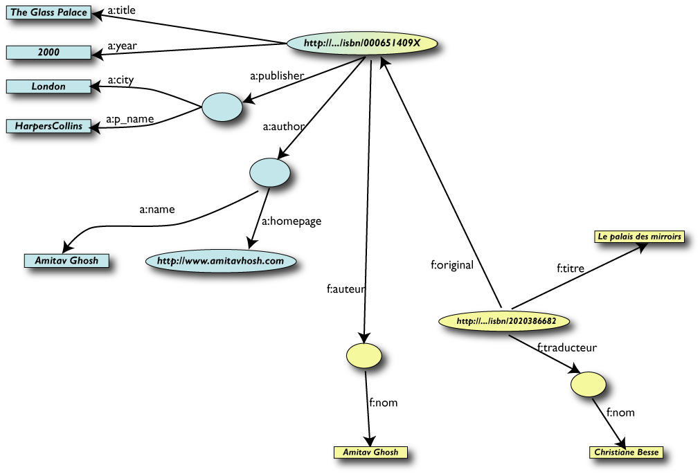

Ringraziamenti
- Questa presentazione utilizza anche materiale
proveniente da:
- presentazioni tenute da Ivan Herman,
W3C Semantic Web Activity Lead
- presentazioni e articoli scritti da F. R. A.
(Bob) Hopgood, Visiting Professor, School of
Technology, Oxford Brookes University
- presentazioni di Steve Bratt
Chief Executive Officer del W3C
- Il materiale di questa presentazione può
essere riutilizzato nel rispetto delle leggi sul
copyright e delle regole del W3C
Il World Wide Web
-
Non più:
-
L'ho sentito in televisione
-
ma:
-
L'ho trovato sul Web
Lo cerco sul Web
-
o ancora:
-
Lo metto sul Web
-
e in futuro:
-
…
L’invenzione del web
-
Non un Eureka
-
non la mitica mela di Newton
- la potenza di combinare le idee in modo
libero ("weblike") ...
- risposta a una sfida
- combinazione di idee e realizzazioni da parte anche
di molti altri
- finalmente un' idea nuova, stimolata da un
ambiente di ricerca di altissimo livello: combinare
in modo libero le idee
Un processo di accrescimento, non la soluzione
lineare di una serie di problemi ben definiti.
Internet
Da ARPANET a Internet
-
ARPANET…
-
- 4 ottobre 1957: lancio dello Sputnik
- 7 febbraio 1958: il dipartimento della difesa USA
avvia il progetto ARPA (Advanced Research
Project Agency)
- 1972: prima dimostrazione pubblica di
ARPANET
-
…verso TCP/IP…
-
- 1973: Kahn e Cerf
- iniziano a lavorare su modelli aperti per
l'interconnessione per progettare la
generazione successiva dei protocolli per ARPANET
- responsabilità
dell'affidabilità della trasmissione dei
messaggi demandata agli host, con ruolo
della rete ridotto al minimo
- Dicembre 1974: prima specifica di TCP
(Transfer Control Protocol) per internetworking
-
…e Internet
-
- luglio 1977: dimostrazione a grande scala di
internetworking mediante ARPANET
- nel 1990 il CERN più grosso sito Internet
in Europa
SGML (breve storia del markup)
In principio fu lo scriptorium…

stat rosa pristina nomine, nomina nuda tenemus
…poi venne Gutenberg…

(http://upload.wikimedia.org/wikipedia/commons/b/b0/Gutenberg_Bible.jpg)
…e poi…
-
Il markup
-
- Nella pratica dell' editoria tradizionale
personale specializzato e correttori di bozze
aggiungono istruzioni simboliche a margine dei
manoscritti
-
La tecnologia
-
- La macchina da scrivere IBM con la qualità
di stampa
- I vari sistemi di markup (proprietari), con
markup mescolato al contenuto
-
Il "generic coding"
-
-
William Tunnicliffe della Graphic
Communications Association (GCA) e il progetto
GenCode
- Charles Goldfarb,
Edward Mosher e Raymon
Lorie in IBM iniziano lo
sviluppo di Generalized Markup Language (GML)
-
SGML
-
- 1978: ANSI inizia il lavoro su uno standard per
la descrizione di testi basata su GML (con il
supporto di GCA)
- 1984: Passaggio all' ISO
- 1985: Draft International Standard (DIS)
- Anders Berglund al CERN implementa il DIS e usa
SGML per il testo dell' IS
- 1986: SGML (ISO 8879)
Hypertext
Vannevar Bush: il Memex
A memex is a device in which an individual stores his
books, records and communications and which is
mechanized so that it may be consulted with exceeding
speed and flexibility. It is an enlarged
intimate supplement to his memory.
The memex "affords an immediate step, however, to
associative indexing, the basic idea of which
is a provision whereby any item may be caused at will
to select immediately and automatically another. This
is the essential feature of the memex. The process
of tying two items together is the important
thing."
(Una riproduzione dell' articolo a: http://www.multimedialab.be/doc/citations/bush_aswemaythink.pdf
o copia locale a: bush_aswemaythink)
Ted Nelson e la definizione di ipertesto (1965)
 A
body of written or pictorial material interconnected in a
complex way that it could not be conveniently represented
on paper. It may contain summaries or maps of its
contents and their interrelations; it may contain
annotations, additions and footnotes from scholars who
have examined it.
A
body of written or pictorial material interconnected in a
complex way that it could not be conveniently represented
on paper. It may contain summaries or maps of its
contents and their interrelations; it may contain
annotations, additions and footnotes from scholars who
have examined it.
Progetto Xanadu (1965-1999):
- Pay-per-link
- Bi-directional links
- Universo dei documenti
- Progetto durato oltre 32 anni
Talvolta i risultati migliori si ottengono
ridimensionando gli obiettivi
Tim e Ted si incontrano nel 1992, e Tim salda il debito
per la copia di Literary Machines (pubblicato
nel 1981)
Tim Berners-Lee
Brevi note biografiche
-
Biografia
di Tim
- nato a Londra, l' 8 giugno 1955
- figlio di Mary Lee e Conway Berners-Lee, due
matematici che lavoravano nel gruppo che sviluppava il
Ferranti Mark 1
- 1973-76: laurea in fisica (Queens College, Oxford)
- 1980: breve lavoro di consulenza al CERN
Suppose all the information stored on computers
everywhere were linked. Suppose I could program my
computer to create a space in which anything could be
linked to anything.
- 1984: di nuovo al CERN
- 1989: presenta una proposta di progetto
- 1990: scrive il brimo browser
- 1994: fonda il World Wide Web Consortium
La sfida dei gruppi di lavoro al CERN
- Grossi gruppi distribuiti
- Progettazione e realizzazione di apparecchiature
complesse
- Progetti di lunga durata
- Analisi distribuita dei risultati
- Le difficoltà negli anni 80
- Varietà di computer e di sistemi di rete
- Accesso in modo diverso ai vari tipi di
informazione
- Grossi investimenti in termini di energie umane
- Frustrazione e inefficienza
- Una sfida per Tim Berners-Lee: come
consentire l' accesso alle varie fonti di informazione in
maniera semplice e coerente
Nasce il Web…
- La proposta del marzo 1989: "Information
Management: A Proposal" contiene i tre elementi
fondamentali:
-
Universal Resource Identifier
-
protocollo per il fetch dei documenti
-
document mark-up
- Implementa su una macchina Next il primo World Wide Web
server, “httpd”, e il primo client,
“WorldWideWeb” un
what-you-see-is-what-you-get hypertext
browser/editor
- “ designed to allow people to work
together by combining their knowledge in
a web of hypertext documents ”
-
ottobre 1990: inizio dello sviluppo
-
dicembre 1990: il programma
“WorldWideWeb” reso disponibile
al CERN
-
estate 1991: il programma
“WorldWideWeb” reso disponibile
su Internet
- 1991-93: Continua la progettazione e lo sviluppo del
Web al CERN
- Raffinamento delle specifiche iniziali di URI,
HTTP e HTML
Tre concetti essenziali
-
URI
-
Universal Resource Identifier: cosa significa
come indirizzo.
È l' innovazione più
fondamentale del Web.
Qualunque programma Web lo utilizza quando segue un
link.
Una volta che un documento ha un URI, può essere
memorizzato su un server e ritrovato
da un browser.
Non esiste un archivio centralizzato di URI.
-
HTTP
-
Hypertext Transfer Protocol: la sequenza con
cui i computer interagiscono e si scambiano
informazioni.
La format negotiation permette la coesistenza
di tutti i tipi di formato.
-
HTML
-
Hypertext Markup Language: se due computer
usano lo stesso software per rappresentare i dati,
possono scambiarli in modo nativo, altrimenti, li
possono tradurre in HTML.
HTML descrive la struttura, non la
presentazione.
Tutto qui?
- Quando qualcuno, da qualche parte, rende disponibile
un' informazione, questa deve essere accessibile da
chiunque, con qualsiasi computer, in
qualsiasi paese (a meno di problemi di
autorizzazione)
- L' ipertesto globale era una prospettiva del
tutto nuova: accesso mediante navigazione
- La possibilità di puntare a qualsiasi risorsa
permette di implementare il meccanismo
associativo
- Il Web è uno spazio informativo universale, in
cui ognuno può accedere all' informazione e
modificarla (browser/editor)
Quello che fa la differenza…
- Ambiente totalmente decentralizzato
-
Interoperabilità
- Non autorità, ma
autorevolezza
Alcune considerazioni importanti
People have sometimes asked me whether I am upset that I
have not made a lot of money from the Web. In fact, I
made some conscious decisions about which way to take my
life. These I would not change - though I am making no
comment on what I might do in the future. What does
distress me, though, is how important a question it seems
to be to some. This happens mostly in America, not
Europe. What is maddening is the terrible notion that
a person's value depends on how important and financially
successful they are, and that is measured in terms of
money. That suggests disrespects for the researchers
across the globe developing ideas for the next leaps in
science and technology.
Core in my upbringing was a value system that put
monetary gain well in its place, behind things like
doing what I really want to do. To use net worth as
a criterion by which judge people is to set out our
children's sights on cash rather than on things that will
actually make them happy.
It can be occasionally frustrating to think about things
my family could have done with a lot of money. But in
general I'm fairly happy to let other people be in the
Royal Family role (as it were), as long as they don't
abuse the power they have as a result. It's not as
if I can just make decisions that change the Web ... but
I can try to get an entire industry to do it. My priority
is to see the Web develop in a way that will hold us in
good stead for a long time. If someone tries to
monopolize the Web - by, for example, pushing a
proprietary variation of network protocols - they're in
for fight.
[da Weaving the Web, p. 107-108]
Il W3C
World Wide Web Consortium (W3C)

“To lead the World Wide Web to its full potential
by developing protocols and guidelines that ensure
long-term growth for the Web”
- Fondato da Tim Berners-Lee nel 1994
- Meccanismo di funzionamento piano ed efficace
- Visione globale
- Definisce Recommendation aperte (Web
Standards)
- Svolge attività di formazione, sviluppa linee
guida…
-
È un forum neutrale per creare consenso
sugli standard web
- Gli standard proposti non derivano da posizioni
dominanti sul mercato
Nascita di una Recommendation
Alcuni principi guida del W3C
-
Le tecnologie Web dovrebbero
essere interoperabili
- il Web è basato su un ampio spettro di
tecnologie
- nessuna tecnologia può pretendere di
coprire tutte le esigenze del Web
- quindi l' interoperabilità delle
tecnologie è assolutamente necessaria
-
Gli Standard Web dovrebbero
essere degli "open standard", quindi
non-proprietari
-
Il Web deve essere accessibile a
tutti
Lo stack delle tecnologie W3C
Il W3C: organizzazione geografica
Organizzazione del W3C
-
Management
-
-
Tecnica
-
-
Domain
-
I Gruppi W3C
Il principio del “consenso”
- Buona parte dell'attività del W3C finalizzata
alla standardizzazione delle tecnologie Web
- Il W3C promuove la realizzazione di standard di alta
qualità con un processo basato sul
consenso
- Il Process
Document
Il W3C: i membri
- Sono la forza del W3C
- Sviluppano le Recommendation
- Guidano l' evoluzione del Web
- Non esiste una forma associativa individuale. I
singoli si possono associare come “Affiliate
Member”
- Diritti:
- partecipazione all'Advisory Committee
- accesso alle informazioni riservate
- possibilità di sottomettere proposte
- revisione delle proposte
- uso del logo
- partecipazione ai Working Group, Interest Group e
Coordination Group
- partecipazione a Workshop e simposi
- possibilità di lavorare con il Team come
W3C Fellow
- Tutti i membri godono degli stessi diritti
Le quote associative
- L'importo delle quote associative dipende da:
- tipo di attività
- For-profit
- Tutte le altre organizzazioni, incluse qulle
not-profit e governative
- Fatturato annuale
- Paese della sede legale
- La quota massima è:
- Europa, Medio Oriente, e Africa: 68.000 EUR
(imprese con fatturato > 51.000.000 EUR)
- Giappone e Corea: 7.400.000 JPY (imprese con
fatturato > 5.750.000.000 JPY)
- tutti gli altri paesi: 63.500 USD (imprese con
fatturato > 50.000.000 USD)
- Esistono altre quote, più basse, in base alla
regione economica a cui appartiene il paese, definita in
base al reddito pro capite del 2007, secondo la
classificazione della World Bank:
- HIC (high income countries): reddito pro capite
maggiore o uguale a $11,456
- UMC (upper middle income): reddito pro capite
$3,706 - $11,455
- LMC (lower middle income): reddito pro capite
$936 - $3,705
- LIC (low income): reddito pro capite $935 o meno
- Tutti i dettagli a:
http://www.w3.org/Consortium/fee-200810 e a:
http://www.w3.org/Consortium/fees
- Per l'Italia:
- 68.000 EUR per le imprese con fatturato >
51.000.000 EUR
- 7.800 EUR per tutti gli altri, comprese le
organizzazioni no profit o governative
Advisory Committee
- L'Advisory
Committee:
- Ogni membro designa un rappresentante nell'Advisory
Committee
- Il componente dell'AC non deve trovarsi in condizione
di conflitto di
interessi.
Esempi di conflitto di interessi sono:
- consulente retribuito o azionista di
un'organizzazione la cui attività è
rilevante per il W3C
- posizione decisionale o di responsabilità
in organizzazioni la cui attività è
rilevante per il W3C
- partecipazione ad un comitato di consulenza
pubblico, anche senza potere decisionale
- L'AC si riunisce due volte l'anno
Advisory Board (AB)
-
Creato nel 1998
- Compiti di consulenza su strategia, gestione,
questioni legali, modalità di funzionamento,
risoluzione di conflitti
- Gestisce l'evoluzione del Process
Document
-
Non ha poteri decisionali, ma solo consultivi
- Invia un resoconto di tutte le sue riunioni all'AC e
ai Chair dei Working Group
- Riferisce sulla sua attività ad ogni AC
- È composto da nove membri (eletti dall'AC) e
un presidente (Chair) designato dal W3C Team
- Il mandato dura due anni, e le decorrenze
dei mandati sono sfalsate in modo che venga rinnovato
per metà ogni anno (con l'eccezione del
chair), quindi ogni anno scadono o quattro o cinque
membri
Technical Architecture Group (TAG)
-
Creato nel 2001
- Gruppo permanente
- Gestione degli aspetti legati all'architettura del
Web:
- documentare i principi dell'architettura Web e
interpretarli o chiarirli quando necessario
- risolvee i problemi relativi all'architettura Web
che gli vengono sottoposti
- contribuire al coordinamento degli sviluppi
cross-technology all'interno e all'esterno del W3C
- Si occupa unicamente di aspetti tecnici
- Conferenza telefonica settimanale
- Invia un resoconto di tutte le sue riunioni all'AC e
ai Chair dei Working Group
- Riferisce sulla sua attività ad ogni AC
- Nove membri:
- uno (chair) designato dal team (in genere il
Direttore)
- tre designati dal Direttore (non necessariamente
mebri del W3C Team)
- cinque eletti dagli AC Representative
- Il mandato dura due anni, e le decorrenze
dei mandati sono sfalsate in modo che venga rinnovato
per metà ogni anno (con l'eccezione del
chair), quindi ogni anno scadono
- due o tre membri componenti eletti
- uno o due componenti designati
Partecipazione a AB e TAG: i vincoli
- Devono rispettare la regola del Good Standing per i WG
- Ogni organizzazione può avere al massimo un
rappresentante nell'AB e nel TAG
- Non è consentito alla stessa persona di essere
componente sia dell'AB che del TAG
-
Modalità di
elezione:
- ogni membro può presentare un candidato
- se il numero dei candidati è pari al
numero di posti, tutti i candidati vengono eletti
- se il numero dei candidati è inferiore al
numero di posti, si reitera l'invito a presentare
candidature
- se il numero dei candidati è superiore al
numero di posti, si procede all'elezione, e ogni
membro può esprimere tante preferenze quanti
sono i posti vacanti
Regole generali per la partecipazione ai gruppi W3C
- Qualità personali (dichiarate dall' AC
Representative)
- competenza tecnica
- correttezza di rapporti interprsonali
- competenza “sociale”
- Eventuale conflitto di interessi
- da dichiarare preventivamente
- da mantenere aggiornato
-
Consenso
- è un valore chiave per il W3C
- in caso di dissenso,le obiezioni tecniche vengono
registrate (obiezioni formali)
- la presenza di un dissenso non può
arrestare l'azione di un gruppo
- i gruppi devono favorire le poposte che causano
il numero minimo di obiezioni
- se un componente di un gruppo ritiene che le sue
obiezioni non siano state debitamente considerate,
può appellarsi al Direttore (tramite il suo AC
Representative)
-
Votazioni
- solo su questioni rilevanti se non
è stato possibile raggiungere un accordo
- ogni organizzazione rappresentata ha diritto ad
esprimere un solo voto (anche per delega)
Activities
- Una Activity
organizza il lavoro necessario per lo sviluppo o
l'evoluzione di una tecnologia Web
- Sono in genere organizzate in gruppi, che producono i
documenti e mantengono i contatti con altri organi
internazionali di standardizzazione:
- Working Group (per gli sviluppi tecnici)
- Interest Group (per espetti più generali)
- Coordination Groups (per comunicazione con gli
altri gruppi)
- I gruppi sono composti da rappresentanti dei membri,
da persnale del Team, e da Invited Experts
- Nascita, modifica, estensione e chiusura di una
Activity sono sottoposte al parere dell'AC
L' attività dei Working Group
Partecipazione ad un WG: Good Standing
- Partecipare ad un WG implica
- partecipare alla maggior parte delle riunioni
- elaborare i deliverable rispettando i tempi
- essere a conoscenza di tutto il materiale
prodotto
- partecipare alle discussioni nelle mailing list
- Si può perdere lo status di “Good Standing”
se:
- si è assenti a più di uno degli
ultimi tre distributed meeting (via
telefono, IRC, videoconferenza)
- si è assenti a più di uno degli
ultimi tre face-to-face meeting
-
non si rispettano i tempi di consegna dei
deliverable
- non si rispetta le regola del conflitto di
interessi
- Solo i componenti in Good Standing possono
votare
WG “Heartbeat”
- Un WG deve tenere informata la comunità
sull'andamento dei suoi lavori
- Per ogni technical report attivo deve essere
pubblicato un nuovo Working Draft almeno ogni
tre mesi (WG Heartbeat)
Incubator Group (XG): cosa sono
- L'attività degli Incubator è flessibile
e ad ampio spettro.
- Gli obiettivi degli Incubator
Group (XG) sono tipicamente:
- Nuove tecnologie, potenzialmente di
base, quindi idee per tecnologie di possibile
ampio utilizzo per supportare l'infrastruttura del
Web, ma non ancora abbastanza mature per giungere a
una Recommendation.
Per esempio:
- Idee innovative o di estrema ricerca, che
possono essere anche non coerenti con
l'architettura Web o altre iniziative (W3C e no)
- Funzioni il cui progetto non è ancora
ben sviluppato o per le quali esistono diverse
possibili soluzioni
- Funzioni sulle quali non c'è ancora
sufficiente consenso nella comunità
-
Web-Based Applications basate
sull'infrastruttura del Web, con caratteristiche
come:
- Lavoro basato sulle tecnologie fondazionali
del W3C, per testarle meglio
- Lavoro necessario per supportare gli sforzi
di particolari comunità di utenti, per
incrementare l'uso del Web e acquisire ulteriore
esperienza sull'uso delle tecnologie
- Ampio spettro di applicazione su varie
comunità di utenti
- Open source software basato su Web
technologies.
Incubator Group (XG): quali sono
Liaison
- Per liaison si
intende qualsiasi coordinazione delle attività con
altre organizzazioni:
- molto informale (es. partecipazione ad un WG)
- associazione reciproca
- accordo formale
- Il Direttore può firmare un MoU, ma deve
preventivamente informare l'AC
- Sono
attive molte liasion con altre organizzazioni
Vision: il futuro del Web
- Dal Web di
- linked documents
- creators & consumers
- ... verso One Web
- of Linked Data
- on Everything
- for Everyone
One Web is…
The same information is available to all users,
regardless of who they are, where they are, what system
they use, or how they are connected
One Web of Linked Data
L' architettura del Semantic Web

-
Il Semantic Web ...
-
- è un' infrastruttura basata su metadati
per poter svolgere ragionamenti sul Web
-
estende, non sostituisce il web attuale
-
I metadati sono:
-
- Informazioni, elaborabili automaticamente
(machine understandable), relative a una
risorsa web o a qualche altra cosa
- ... data about data
- ... informazioni che possono essere utilizzate da
intelligent software agents per fare un uso
appropriato delle risorse
- ... dati ...
- ... che possono essere descritti da altri
metadati ...
L' integrazione dei dati: il ruolo delle tecnologie

Una versione semplificata di una biblioteca (Dataset "A")
-
Tabella Book
-
|
ID
|
Author
|
Title
|
Publisher
|
Year
|
|
ISBN 0-00-651409-X
|
id_xyz
|
The Glass Palace
|
id_qpr
|
2000
|
-
Tabella Author
-
|
ID
|
Name
|
Home page
|
|
id_xyz
|
Amitav Ghosh
|
http://www.amitavghosh.com/
|
-
Tabella Publisher
-
|
ID
|
Publisher Name
|
City
|
|
id_qpr
|
Harper Collins
|
London
|
Rappresentata come grafo …

Un' altra biblioteca (dataset "F")
-
Tabella Livre
-
|
ID
|
Titre
|
Auteur
|
Traducteur
|
Original
|
|
ISBN 2020386682
|
Le Palais des miroirs
|
i_abc
|
i_qrs
|
ISBN 0-00-651409-X
|
-
Tabella Auteur
-
|
ID
|
Nom
|
|
i_abc
|
Amitav Ghosh
|
|
i_qrs
|
Christiane Besse
|
Secondo passo: esportare il secondo insieme di dati

Merging dei dati…

…e delle risorse identiche

Il ruolo fondamentale degli URI
- Gli URI rendono possibile il merge
-
Chiunque può creare (meta)dati su
qualunque risorsa sul Web, per esempio:
- lo stesso file XHTML può essere
annotato con altri termini
- è possibile aggiungere semantica alle
risorse Web esistenti utilizzando URI
- gli URI rendono possibile collegare (con
proprietà) i dati tra di loro
-
Gli URI sono la base del ruolo di RDF nel Web
slide
One Web: On Everything
One Web on every surface

One Web on every device

One Web, accessible via a range of interactions

Tom Cruise in Minority Report Spielberg (2002)
One Web: For Everyone, Connecting & Empowering All
People
Il valore sociale del Web
The social value of the Web is that it enables
human communication, commerce, and opportunities to share
knowledge [and] to make these benefits available to
all people, whatever their hardware, software,
network infrastructure, native language, culture,
geographical location, or physical or mental ability
Cosa può fare il Web per l'umanità?
-
Qualche numero
-
- Non usano il Web: ~5,000,000,000
- Vivono con un reddito di $1.25/giorno o meno:
~1,400,000,000
- Denutriti: ~920,000,000
- Analfabeti: ~900,000,000
-
Molti altri ostacoli
-
- Assenza di supporto per lingue e caratteri
- mancanza di supporto per i disabili
- Soluzioni proprietarie vs open standards
- Censura, disciminazione nell'accesso
- Comprendere il funzionamento del Web
- Comprendere come il web può dare maggior
potere alle persone
(dati 2007/2008)
La World Wide Web Foundation

-
http://www.webfoundation.org/
- Advance the Web
- Connect humanity
- Empower people
- “The Web Foundation will break-down the
barriers that now prevent billions of people from
being connected and empowered by the Web, while
advancing future technologies leading toward a
more capable, useful and usable Web for all people on
the planet.”
Il Web 2.0: rinascono i muri?

David Simonds, The Economist
Il Web 2.0: un fenomeno sociale
-
Pro
-
- Social networking
- User Generated Content
- Social tagging e folksonomy
-
Contro
-
- Mantenere viva l'attenzione utente:
- Telecommunications bandwidth is not a
problem; human bandwidth is
- Utente “dipendente“ dal sito
- problemi di migrazione, duplicazione del
lavoro
- Frazionamento su più reti
- Legge di Metcalfe: il valore di una rete
è proporzionale al quadrato del numero di
nodi presenti
Web 2.0 o Web Semantico?
-
Web 2.0
-
- livello d'ingresso meno costoso
- orizzonti limitati
-
Web Semantico
-
- investimenti iniziali rilevanti
- potenziale superiore
Conclusioni
- Il World Wide Web
- Ancora molti margini di evoluzione (leading
the Web to its full potential)
- Motivazioni tecniche e ideali
- Il W3C guida l' evoluzione del Web, grazie
al contributo dei suoi membri
 Il Web non è solo tecnologia, ma…
Il Web non è solo tecnologia, ma…
-
Humanity Connected by Technology…
-
…e cosa possono fare la tecnologia e i
collegamenti per dare maggior potere a tutti
Sono orgoglioso di ...

Happy birthday, W3C

Tim Berners-Lee e Oreste Signore


{kind=link}